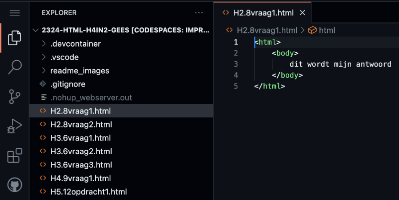

Betreed de opwindende wereld van digitale beveiliging, waar vertrouwelijkheid, integriteit en beschikbaarheid de sterren zijn.
Leer over geavanceerde authenticatie, slimme screening en 'file permissions' die digitale indringers stoppen.
Ontdek het '3-2-1 back-upsysteem' voor dataveiligheid bij mogelijke rampen.
Encryptie en hashing dienen als onzichtbare schilden tegen DDoS-aanvallen. Kortom, een fascinerende reis vol digitale intriges en heldendaden.
Durf je de digitale wereld opnieuw te ontdekken?

Verken de wereld van digitale beveiliging, van fysieke tot toepassingslagen.
Ontdek SSL-certificaten, encryptie, en risico's van menselijke fouten.
Leer over handige tools zoals password managers en de gevaren van ongewenste handelingen, waaronder social engineering en phishing.
Duik in de duistere kant van digitale bedreigingen met malware, zoals trojan horses, worms, viruses, spyware, adware en ransomware.
Begrijp hoe deze kwaadaardige software zich verspreidt en waarom zero day kwetsbaarheden vaak doelwitten zijn.
Deze reis biedt in elke alinea waardevolle inzichten en cruciale informatie over digitale beveiliging. Klaar om je kennis te vergroten?
Introductie
Hackers, vaak als internetcriminelen gezien, kunnen goede bedoelingen hebben, zoals het verbeteren van de verdediging.
We verkennen computercriminaliteit, inclusief diefstal, fraude, afpersing, en inbraak.
Een diepere blik op hacken, het ongeoorloofd binnendringen in systemen, onthult ook ethische hackers die het internet veiliger maken.
We werpen een blik op spionage en digitale oorlogvoering, waar 'zero days' als digitale wapens fungeren.
Criminelen, beveiligingsbedrijven en overheden spelen een rol in deze dynamiek.
Veiligheid in ICT-systemen wordt bereikt door makers en gebruikers met maatregelen in preventie, detectie, repressie, en correctie. Preventie omvat veilige hardware, up-to-date software, sterke authenticatie, en minimale toegang. Detectie gebeurt met firewall en anti-malwaresoftware. Repressie en correctie zijn gericht op het voorkomen en herstellen van aanvallen.
Encryptie, zowel symmetrisch als asymmetrisch, speelt een rol in veilig datatransport.
Persoonlijke maatregelen omvatten regelmatige updates, sterke wachtwoorden, beveiligde apparaten, back-ups, en waakzaamheid bij online activiteiten.